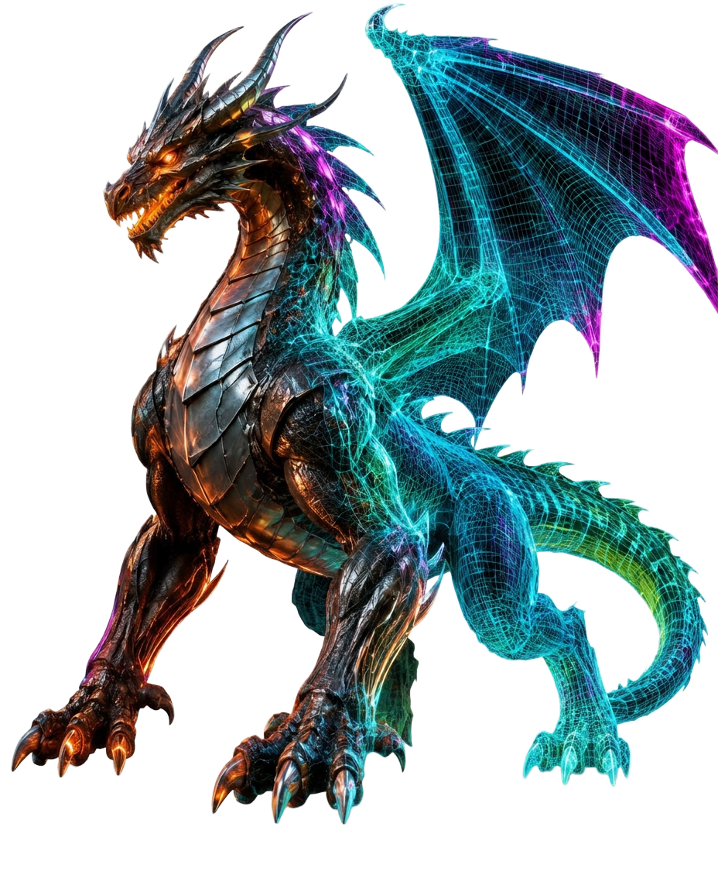

> system.init(nexverse)_
Herní assety a animace generované umělou inteligencí. Od nápadu k hratelné postavě za pár minut.

// Funkce
Postavy, zbraně, prostředí. Z textu nebo skici rovnou do 3D s PBR texturami.
AI rigging a motion synthesis. Chůze, boj, emoce — bez motion capture.
Chytré NPC, které přemýšlí, plánují a reagují na hráče.
Sprity, ilustrace i 3D modely z jednoho popisu.
Soundtrack a zvukové efekty, které se přizpůsobí dění ve hře.
Rozhovory postav s hlasem, emocemi a větvením příběhu.
Automatický rig pro 2D postavy, připravený k animaci.
Kostra a skinning 3D modelů během pár sekund.
Výrazy tváře a pohyb rtů synchronizovaný s hlasem.
Navrhněte hrdinu od siluety po poslední detail.
Krajiny, města a celé světy generované na míru.
Bytosti a monstra, jaká svět ještě neviděl.
Univerzální generátor pro cokoli, co vaše hra potřebuje.
Unity, Unreal, Godot. FBX, glTF a USD připravené k nasazení.
▌// Animační engine
Náš engine rozumí fyzice i emocím. Popište akci slovy a AI vytvoří plynulou animaci připravenou pro váš herní engine.
Early access je otevřen pro herní studia i nezávislé vývojáře.